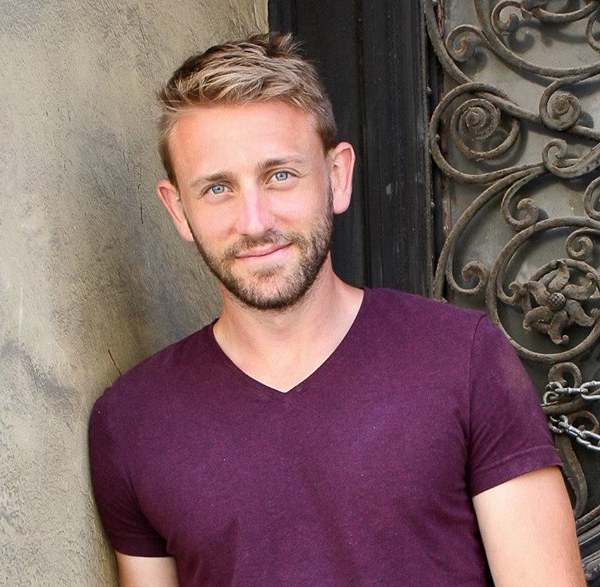

<link rel="import" href="../bower_components/polymer/polymer.html">

<dom-module id="sportal-about">

    <template>

        <style>
            :host {
                display: block;
                /*padding: 10px;*/
            }

            .adam-pic {
                height: 100px;
                border-radius: 50px;
                margin-top: 10px;
            }

            .mission {
                margin: 20px;
            }

        </style>

        <div>
            <paper-card elevation="1">
                <div>
                    <paper-card image="../images/basketball-court-picture.jpg" elevation="1">
                        <div class="mission">

                        <h1>Story and Mission</h1>

                        <h4>Youth sports is an integral part of growing up. It helps you learn important skills like teamwork, it fuels a lifetime of competitiveness, and it ingrains a love of sports into the mind of young atheletes. The only problem is, it ends. By the time most people reach college age, they have mostly stopped playing sports, or only play them very rarely. Many people dont have the resources to find a league, or people to play a sport with in their area. Coordinating the times and places to play is tough. That's why Sportal was created. To help people find sports at any age, in any place, and at any level. I want to help people stay healthy, continue their passion for sports, and just get outside. </h4>

                        <p>Personally, as the founder of Sportal, I had a tough time once I left college finding recreational sports to play. Whether it was finding the right league, or getting enough people to play pickup on a Sunday afternoon, I just couldn't quite get enough playing time. Finding leagues online was tedious, and devoted a lot of time to searching. Pickup games never had enough players, and were too few and far between for my liking. For my own benefit I wanted Sportal, in order to find the best places for me to play.</p>

                        <p>Now, Sportal allows you to find all the recreational sporting possibilities near you, and just helps you find a place to play when you need it. Whether its a triathalon, a pickup basketball game, or a yoga studio down the street, you have the ability to find or create all of the events you want!</p>

                        <p>Play On,</p>

                        <p><strong>Adam Ross Russell <strong><br>
                        Founder and Developer of Sportal<br>
                        

                        </div>


                    </paper-card>
                    <paper-card image="../images/snowboard.jpg" elevation="1">
                        <div class="disclaimer">

                        <h1>Privacy and Disclaimers</h1>

                        <p>Disclaimers here</p>

                        </div>

                    </paper-card>

            </paper-card>
        </div>

    </template>

    <script>

        Polymer({

            is: 'sportal-about'

        });

    </script>

</dom-module>
